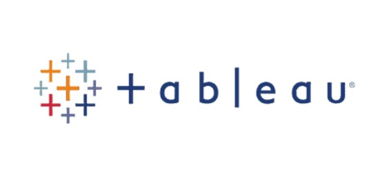

" Explore Python data science and analysis projects, showcasing expertise in data manipulation, exploration, and predictive modeling. Leveraging tools like Pandas and Scikit-Learn, I tackle data cleaning, transformation, and machine learning across diverse domains. These projects underscore Python's versatility and its profound impact in the field of data science and analysis."

With tableau public, we leverage advanced data visualization techniques to extract valuable insights from complex datasets, empowering stakeholders with interactive dashboards and data-driven decision-making capabilities, ultimately driving business success.
Explore my SQL projects, where I showcase expertise in database management and query optimization. These projects demonstrate skills in designing efficient database schemas, crafting complex SQL queries, and leveraging relational databases for insights from structured data. Discover diverse industry applications that highlight SQL's transformation of data into actionable intelligence.
Join me on an exciting journey of exploration in the ever-evolving world of data science and analysis, where new frontiers are uncovered, and limitless possibilities await.